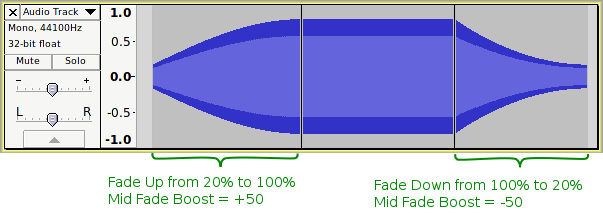
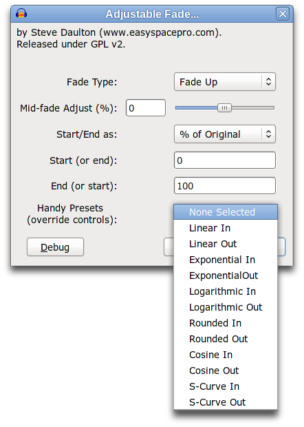

Adjustable Fade
From Audacity Manual
As with other Nyquist effects the settings will be "remembered" only for the duration of the Audacity session, so you may want to take note of any particularly useful fade curves that you create.
- Accessed by:

Fade Type
There are just two basic fade types available from this dropdown, either of which may be "Up" (from a low level to a higher level) or "Down" (from high level to a lower level).
- Fade Up: provides a linear or simple curve fade up from a low gain setting to a higher gain setting.
- Fade Down: provides a linear or simple curve fade down from a high gain setting to a lower gain setting.
A "simple" curve is one that curves in one direction only, for example the level may be changed slowly at first and progressively change more rapidly, or may change rapidly at the start of the fade and then gradually level out.
- S-Curve Up: provides a "double" curve that bends one way and then the other. The level will rise gradually at first, then progressively more steeply toward the middle of the fade before gradually leveling out.
- S-Curve Down: The level will fall gradually at first, then progressively more steeply toward the middle of the fade before gradually leveling out.
Mid-fade Adjust
This slider control has a range of +/- 100 (default 0). It allows the shape of the fade that has been selected in the "Fade Type:" menu to be modified. Setting this control greater than zero will tend to push up the center of fade, whereas negative values will tend to pull down the level in the middle of the fade.
- When used with "Fade Type: = Fade Up", a value of zero (default) will produce a linear fade.
- Values greater than zero will cause the fade to rise more rapidly at first before leveling out to the higher amplification level.
- Values less than zero will cause the fade to rise slowly at first then gradually rise more rapidly.
- The further away from zero that this is set, the more curved the fade will be.
- The mid fade amplification will never be less than the start of the fade or greater than the end of the fade.
- When used with "Fade Type: = Fade Down", a value of zero (default) will produce a linear fade.
- Values greater than zero will cause the fade to fall gradually at first then progressively more steeply as it approached the final level.
- Values less than zero will cause the fade to fall rapidly at first then progressively level out.
- The further away from zero that this is set, the more curved the fade will be.
- The mid fade amplification will never be greater than the start of the fade or less than the end of the fade.
- 
- When used with "Fade Type: = S-Curve Up or S-Curve Down", half way through the fade the gain will be exactly half way between the starting point and end point.
- With values greater than zero the fade will retain its "double curve" character but will be a bit higher at the mid point.
- With values greater than zero the fade will retain its "double curve" character but will be a bit lower at the mid point.
Start/End as
This dropdown enables you to choose between percentage or dB as the units to be used in the Start and End gain parameter boxes below.
| The final two text boxes must contain one number each. They define the initial and final gain (amplification amount) of the fade. It is unimportant if these are entered with the initial gain in the first text box and the final gain in the last, or the other way around as the direction of the fade is determined by the Fade Type: selection. |
Start (or end)
Enables you to set the Start (or end) gain. If you are using percentage units, the default value of 0 (silence) will give you the start of a fade up from silence.
End (or start)
Enables you to set the End (or start) gain. If you are using percentage units, the default value of 100 (the original level or unity gain) will give you the final gain for a fade up to full volume. .
Handy Presets
A number of fixed preset curve shapes are available from this dropdown selector: Linear, Exponential, Logarithmic, Rounded, Cosine and S-Curve.
- 
| Important: Selecting a preset curves will override all other parameter settings dialog box for this effect. To make the other parameters operable you will need to set "None Selected" from this dropdown. |
- None Selected: Manual settings. Fade Type, Mid Fade Adjust, Start and End settings are all functional.
- Linear In: Same as the Fade In effect.
- Linear Out: Same as the Fade Out effect.
- Exponential In: The level rises exponentially, similar to using the Envelope Tool.
- Exponential Out: The level falls exponentially, similar to using the Envelope Tool.
- Logarithmic In: A "convex" curve that rises moderately steeply from silence and progressively less steeply.
- Logarithmic: A "convex" curve that falls gently initially then progressively more rapidly.
- Rounded In: A "convex" curve that rises abruptly from silence then progressively less steeply.
- Rounded Out: A "convex" curve that falls gradually from the initial level, then progressively more steeply to a fairly abrupt end.
- Cosine In: A "convex" curve that rises moderately steeply from silence and gradually levels out to create a smooth transition to the original level
- Cosine Out: A "convex" curve with a smooth transition from the original level, progressively falling more steeply to silence.
- S-Curve In: A "double" curve that creates a smooth transition from silence, gradually rising more steeply, then leveling out to create a smooth transition to the original level.
- S-Curve Out: A "double" curve that creates a smooth transition from the original level, gradually falling more steeply, then leveling out to create a smooth transition to silence. Similar to the Studio Fade Out effect.
Example Settings
These settings assume that Start and End are set as "% of Original". Note that the order of the 'Start' and 'End' settings is unimportant.
| Desired Effect | Fade Type | Mid-Fade Adjust (%) | Start (or End) | End (or start) |
| Linear fade-in from silence to original level | Fade Up | 0 | 0 | 100 |
| Linear fade-out from original level to silence | Fade Down | 0 | 0 | 100 |
| Linear fade from original level to half volume | Fade Down | 0 | 50 | 100 |
| Exponential fade-out similar to using Envelope Tool | Fade Down | Less than 0 | 0 | 100 |
| Fade-out for 'Equal Power' crossfade | Fade Down | +50 | 0 | 100 |
| Fade-in for 'Equal Power' crossfade | Fade Up | +50 | 0 | 100 |
| Similar to 'Studio Fade Out' effect | S-Curve Down | 0 | 0 | 100 |
| Smooth change from half of original volume to twice original volume | S-Curve Up | 0 | 50 | 200 |